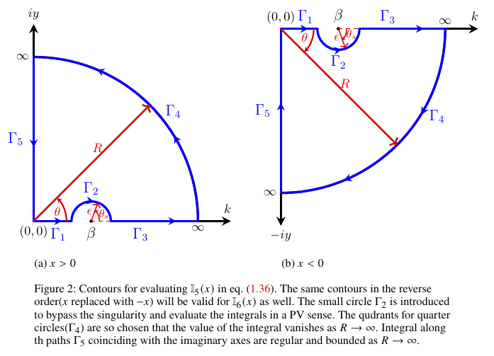

Proof: Steady-state solution for pure gravity ($\alpha = 0$)
Evaluation of time-independent term $\eta_{s}(x)$
Let us first focus on the time-independent part $\eta_s(x)$. This can be rewritten as:
(P.1)
\[\frac{\eta_{s}(x)}{F_0} = \frac{1}{2\pi (1+\rho_r)}\left\{\mathbb{I}_5(x)+\mathbb{I}_6(x)\right\},\]
where, we define,
(P.2)
\[\mathbb{I}_5(x) = \int_{0}^{\infty}dk\;\dfrac{\exp\left(ikx\right)}{k - \beta}, \qquad -\infty < x < \infty,\]
(P.3)
\[\mathbb{I}_6(x) = \int_{0}^{\infty}dk\;\dfrac{\exp\left(-ikx\right)}{k - \beta}, \qquad -\infty < x < \infty.\]

The integrals $\mathbb{I}_5(x)$ and $\mathbb{I}_6(x)$ are singular at $k=\beta$, lying along the line of integration, as shown in Figure 2. Hence we interpret them to exist in a Principal Value (PV) sense. They may be evaluated by contour integration using the PV method, with the contours shown in Figure 2.
The PV of an integral $I=\int_{0}^{\infty} f(x)\,dx$, where $f(x)$ possesses a simple first-order pole at $x=x_0$ ($x_0 \in \mathbb{R}^{+}$), is defined as
(P.4)
\[I=\operatorname{PV}\int_{0}^{\infty} f(x)\,dx =\displaystyle \lim_{\epsilon \to 0} \left[ \int_{0}^{x_0-\epsilon} f(x)\,dx + \int_{x_0+\epsilon}^{\infty} f(x)\,dx \right],\]
if such a limit exists.
Consider the integral $\mathbb{I}_5^c(x)$ along the closed contour shown in Figure 2(a) for $x>0$,
(P.5)
\[\mathbb{I}_5^c(x) = \oint dz \, \frac{\exp\left(izx\right)}{(z - \beta)}, \qquad x>0.\]
\[\mathbb{I}_5^c(x)\]
will be zero as the closed contour does not enclose any singularity. Further, upon breaking this integral along the individual segments of the contour, one may write as
(P.6)
\[\mathbb{I}_5^c(x) = 0 = \int_{\Gamma_1} dz\, \frac{\exp(izx)}{z-\beta} +\int_{\Gamma_2} dz\, \frac{\exp(izx)}{z-\beta} +\int_{\Gamma_3} dz\, \frac{\exp(izx)}{z-\beta} +\int_{\Gamma_4} dz\, \frac{\exp(izx)}{z-\beta} +\int_{\Gamma_5} dz\, \frac{\exp(izx)}{z-\beta}.\]
The integral on the large quarter circle $\Gamma_4$ tends to zero as $R \to \infty$ for $x>0$, as argued below,
(P.7)
\[\lim_{R \rightarrow \infty}\left[\int_{\Gamma_4} dz\, \frac{\exp(izx)}{z-\beta}\right]=\lim_{R \rightarrow \infty} \left[\int_{0}^{\frac{\pi}{2}} d\theta \, iR \exp(i \theta) \frac{\exp\left(ixR \cos(\theta)\right)\exp\left(-xR \sin(\theta)\right)}{(R \exp(i \theta) - \beta)} \right],\]
the value of the integrand above is governed by the factor $\exp(-xR\sin\theta)$ which tends to zero as $R \to \infty$ for $x>0$ by Jordan's lemma, since $\sin(\theta)$ is always positive in the first quadrant. In view of this, eqn. (P.6) reduces to,
(P.8)
\[\begin{aligned} &\lim_{\substack{\epsilon \to 0 \\ R \to \infty}} \left[\int_{0}^{\beta-\epsilon}dk\, \frac{\exp\left(ikx\right)}{(k-\beta)} + \int_{\beta+\epsilon}^{R}dk\, \frac{\exp\left(ikx\right)}{(k-\beta)}\right] \\ &+ \lim_{\epsilon \to 0}\left[\int_{\pi}^{0} d\theta_s \, \frac{\left\{\exp \left(i \left[\beta+\epsilon \exp \left(i\theta_s\right)\right]x\right)\right\}\, \left\{i\epsilon \exp \left(i\theta_s\right)\right\} } {\left\{\beta+\epsilon \exp \left(i\theta_s\right)-\beta\right\}}\right] \\ &+ \int_{\infty}^{0} dy\,\exp \left(i\frac{\pi}{2}\right) \frac{ \exp \left(i \left[\exp \left(i\frac{\pi}{2}\right)y\right] x\right)}{\left\{\exp \left(i\frac{\pi}{2}\right)y-\beta\right\}}\, =0. \end{aligned}\]
Upon completing the limiting process and identifying the first two terms with the PV of $\mathbb{I}_5(x)$ and evaluating the remaining terms, one obtains,
(P.9)
\[\operatorname{PV}\! \left[\mathbb{I}_5(x)\right] = i \pi \exp \left(i\beta x\right) +i \int_{0}^{\infty} dy\, \frac{\exp \left(-yx\right)}{(iy-\beta)} \, , \qquad x>0.\]
Similarly, for $x<0$ one performs similar steps of contour integration using the contour in Figure P1(b) and obtains,
(P.10)
\[\operatorname{PV}\! \left[\mathbb{I}_5(x)\right] = -i \pi \exp \left(i\beta x\right) +i \int_{0}^{\infty} dy\, \frac{\exp \left(yx\right)}{(iy+\beta)} \, , \qquad x<0.\]
The integral $\mathbb{I}_6(x)$ in eqn. (P.3) is the converse of $\mathbb{I}_5(x)$ with $x$ replaced with $-x$, accordingly one may write
(P.11)
\[\operatorname{PV}\! \left[\mathbb{I}_6(x)\right] = -i \pi \exp \left(-i\beta x\right) +i \int_{0}^{\infty} dy\, \frac{\exp \left(-yx\right)}{(iy+\beta)} \, , \qquad x>0,\]
and
(P.12)
\[\operatorname{PV}\! \left[\mathbb{I}_6(x)\right] = i \pi \exp \left(-i\beta x\right) +i \int_{0}^{\infty} dy\, \frac{\exp \left(yx\right)}{(iy-\beta)} \, , \qquad x<0.\]
Upon plugging eqns. (P.9)–(P.12) into eqn. (P.1) and separating the real and imaginary parts (the latter vanishes), one obtains symmetric expressions for $x>0$ and $x<0$. Since this is expected — the integral expression for $\eta_s(x)$ contains a symmetrical term namely $\cos(kx)$ — taking this symmetry into account one may write down the final expression as,
(P.13)
\[\frac{\eta_{s}(x)}{F_0} = \dfrac{1}{\pi\left(1+\rho_r\right)}\left[-\pi\sin\left(\beta |x|\right)+\int_{0}^{\infty}dy\;\dfrac{y\exp\left(-|x|y\right)}{\beta^2 + y^2}\right],\quad 0 < \beta < 1,\; -\infty < x < \infty.\]
It may be noted while the first term shows a far-field steady wavy pattern both upstream and downstream, the second term is a localised contribution which decays to zero rapidly as $|x|^{-2}$ as $|x| \to \infty$; its value at $|x|=0$ possesses a logarithmic divergence with respect to $x$.